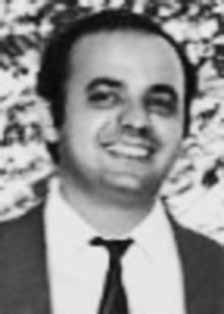

Luís
Alberto
Andrade
de Sá
e Benevides
CIRCUNSTÂNCIAS DA MORTE
Luís Alberto morreu em um acidente de automóvel, juntamente com sua esposa, Miriam Lopes Verbena, ocorrido na BR-432, entre Cachoeirinha (PE) e São Caetano (PE), em de 8 de março de 1972. 4 Eles viajavam em um carro emprestado por Ezequias Bezerra da Rocha, que também seria morto sob tortura e, em seguida, desaparecido pelo DOI do IV Exército, no Recife (PE), logo após a morte do casal. Essa versão oficial foi reproduzida nos relatórios das Forças Armadas, entregues ao então ministro da Justiça, Maurício Corrêa, em dezembro de 1993. Segundo o relatório do Ministério da Marinha, “morreu em março de 72, em desastre de automóvel entre Caruaru e Lagoa/PE”. 5 O relatório do Ministério da Aeronáutica registrou que “[…] morreu em desastre de automóvel, no dia 09 Mar 72, na Rodovia que liga Caruaru a Lajes (Pernambuco) em companhia de sua esposa Miriam Lopes Verbena. (Correio Braziliense, 16 Mar 72 e Jornal do Brasil, de 13 de Mai de 72)”. 6 As circunstâncias do acidente, no entanto, ainda não foram completamente esclarecidas. Luís Alberto almejava viver na clandestinidade, por conta da perseguição a que estava submetido pelos órgãos da repressão, e foi ao município de Cachoeirinha (PE), com sua esposa Miriam, no dia 8 de março de 1972, para providenciar documentos na Junta de Serviço Militar (JSM), com o nome falso de “José Carlos Rodrigues”. 7 A certidão de óbito foi feita sob o nome falso de “José Carlos Rodrigues”, utilizado por Luís Alberto à época do acidente. 8 O auto de exame cadavérico, elaborado também com a identidade falsa da vítima, consta no Inquérito Policial produzido à época do acidente. 9 A retificação do atestado de óbito foi feita apenas por decisão judicial, na data de 09 de agosto de 1993. 10 Iara Xavier Pereira fez investigações sobre o acidente de Luís Alberto, em Pernambuco, para auxiliar o requerimento dos familiares dele na CEMDP, e elaborou, em 17 de março de 1998, relatório circunstanciado, resultado de entrevistas com agentes envolvidos e diligências no local do acidente, no qual levantou vários pontos controversos sobre a versão oficial das circunstâncias de morte do casal. 11 Entre algumas das contradições apontadas por Iara Xavier Pereira no relatório que produziu para a CEMDP estão: 1. Os órgãos de segurança de Pernambuco, notadamente a Polícia Rodoviária Federal, o DOPS/PE e o DOI do IV Exército não informaram nos documentos produzidos sobre o acidente quem socorreu e quem transportou o casal do local do acidente para o hospital de Caruaru. 12 O Departamento Nacional de Estradas e Rodagem (DNER) e a Polícia Rodoviária Federal (PRF) não encontraram o laudo do acidente automobilístico sobre o caso. 13 2. Testemunhas presentes no hospital que atendeu Luís Alberto e Miriam Lopes afirmaram que o local estava repleto de policiais e agentes estatais e que os médicos e profissionais da saúde demonstraram medo e receio de fornecer informações sobre o acidente e a morte das vítimas. 14 3. No livro de internação do Hospital São Sebastião, em Caruaru, não foram encontrados registros nem dos nomes verdadeiros de Luís Alberto e de Miriam Lopes, tampouco dos nomes falsos utilizados pelo casal à época do acidente. 15 4. Depoimentos prestados pela funcionária da Junta de Serviço Militar (JSM), Jaidenize Bezerra de Vasconcelos, para os familiares de mortos e desaparecidos políticos, apresentaram contradições e alterações de versões. Jaidenize afirmou não ter atendido Luís Alberto na data do acidente, porém, o local e o sentido da pista onde o carro capotou sugere que o casal estava regressando do município sede da JSM, o que poderia indicar uma perseguição policial durante o acidente. Familiares suspeitam, inclusive, que a funcionária possa ter informado autoridades dos órgãos de segurança sobre a presença do casal na JSM. 16 No dia seguinte ao acidente, portanto, em 9 de março de 1972, Maria Adozinda, irmã de Miriam Lopes, foi sequestrada de sua casa. 17 Aloysio da Costa Gonçalves, esposo de Maria Adozinda, recebeu a informação de que ela havia sido levada para o DOI do IV Exército. No dia 13 de março de 1972, Aloysio também foi sequestrado em sua residência e levado para o DOI do IV Exército, onde permaneceu preso por 42 dias. 18 Dois meses após a morte de Luís Alberto e Miriam Lopes, o jornal Diário de Pernambuco, em 12 de maio de 1972, noticiou a desarticulação de militantes do PCBR que atuavam em Recife, presos a partir do acidente que vitimou Luís Alberto e Miriam Lopes. 19 Outro elemento relevante para a elucidação do caso foi a prisão de Ramayana Vaz Vargem e Maria Dalva Leite Castro, no Rio de Janeiro, em 7 de março de 1972. Ramayana fazia o contato entre Luís Alberto e os familiares dele no Rio de Janeiro. A sua prisão um dia antes da morte do casal merece maiores investigações, uma vez que esse fato coincide com a queda de vários militantes do PCBR no Nordeste, sobretudo, em Pernambuco. 20 Em depoimento prestado à CEMDP, no dia 07 de março de 1998, Paulo José Montezuma de Andrade afirma que conhecia Miriam Lopes e Luís Alberto e sustenta que eles estavam sendo seguidos e monitorados pelos órgãos de segurança, antes mesmo do acidente. 21 Há duas outras possíveis versões para a morte do casal no acidente de automóvel, com envolvimento de agentes do Estado. De acordo com a primeira, teriam sido capturados antes do acidente, que teria sido forjado. Conforme a segunda, o veículo teria sido fechado propositalmente por uma caminhonete do DOI do IV Exército. A primeira versão tem como referência a declaração de Piragibe Castro Alves para a CEMDP, em 12 de setembro de 1996, quando afirmou ter ouvido de um oficial militar a confirmação do envolvimento de agentes do Estado na captura do casal, que teria ocorrido em momento anterior à morte no suposto acidente automobilístico: 22 I – Durante a primeira quinzena do mês de março de 1972, hospedou-se na residência oficial do Comandante do Quarto Exército, General Dale Coutinho, pai do economista Vicente de Paulo Dale Coutinho, que era seu colega e acionista na empresa COSEP Consultoria, Estudos e Planejamento S. A. II – Achando-se na varanda da casa com o referido colega, ouviu de amigo da família Dale Coutinho, alegadamente um oficial de marinha ligado aos serviços de segurança, que estes haviam capturado, em Caruaru ou cercanias, um casal subversivo, que posteriormente veio a falecer em circunstâncias que não revelou, nem o declarante lhe perguntou a respeito, inclusive porque teve problemas políticos durante o regime militar, chegando a ser processado, embora finalmente absolvido. III – Posteriormente, veio a saber pela imprensa que o cônjuge marido do casal dito subversivo, capturado e falecido, era, na verdade, Luiz Alberto Andrade de Sá e Benevides, seu ex-vizinho no edifício dos militares na Praia Vermelha, Rio de Janeiro, onde residiam suas respectivas famílias. Em 15 de março de 1998, Piragibe prestou um esclarecimento para complementar a declaração apresentada anteriormente. 23 Segundo o declarante, o citado oficial da Marinha, que assumiu a captura do casal, estava acompanhado por um senhor, que disse na ocasião: “é verdade, nós acabamos com eles”. Piragibe lembrou-se, de início, que esse senhor era tratado por coronel e tinha um “nome inusual”. Concluiu, posteriormente, que se tratava do coronel do exército Confúcio Danton de Paula Avelino, pois o identificou quando ouviu seu nome citado por Reynaldo Benevides, irmão de Luís Alberto, em conversa informal que tiveram. Nessa conversa, Reynaldo relatou ter conhecido Confúcio como o Chefe do CODI do IV Exército, com quem tratou pessoalmente em Recife da liberação do corpo de seu irmão, na semana seguinte à sua morte, para conduzi-lo ao Rio de Janeiro, o que não foi autorizado. Confúcio Danton de Paula Avelino atuava em função de comando no CODI do IV Exército no período das mortes de Luís Alberto, de Miriam Lopes e de Ezequias Bezerra da Rocha, e exerceu, ao longo de 1972, por alguns períodos, a função de Chefe do Estado Maior do IV Exército. Auxiliar direto do general Vicente de Paulo Dale Coutinho, Confúcio foi elogiado por ele com destaque para sua atuação à frente da repressão no Nordeste, na data de 04 de janeiro de 1973, em Boletim informativo do Exército, na ocasião em que foi promovido ao posto de general, nos seguintes termos. 24 Chefe do EM da 2o RM, no período mais aguado da subversão no Brasil que escolheu o Estado de São Paulo como principal teatro para suas operações. […] Perdi-o, justamente nesse período difícil, quando foi escolhido pelo próprio Presidente da República para comandar a Polícia Militar de São Paulo, onde prestou reais serviços a esse Estado da Federação naquela luta contra a subversão. Durante meu comando no IV Exercito, mais uma vez, contei com a prestimosa colaboração deste brilhante oficial, nas funções de Subchefe do meu Estado-Maior, constituindo no elemento chave de toda a luta contra o terrorismo no Nordeste, nesse período, e que agora, vem alcançar as estrelas do generalato na Chefia de meu Gabinete no meu DMB (Departamento de Material Bélico). A segunda versão decorre da declaração de Aloísio da Costa Gonçalves, cunhado de Miriam Lopes Verbena, preso à época da morte do casal, após a detenção de sua esposa, que em depoimento gravado pela CNV e obtido pela CEMVDHC, em Recife, no dia 14 de outubro de 2014, forneceu elementos para esclarecer o acidente de Luís Alberto e de Miriam Lopes. De acordo com Aloísio Gonçalves da Costa, Álvaro da Costa Lima, delegado de polícia em Pernambuco, que foi também secretário de segurança no Estado, declarou a Valdir Cavalcante, médico e cunhado do depoente, que uma caminhonete do DOI teria fechado intencionalmente o carro que dirigiam Luís Alberto de Sá e Benevides e Miriam Lopes Verbena, provocando-lhes um acidente. 25 O depoente alegou ainda ter providenciado o enterro do casal em Caruaru e disse que ao examinar o corpo de Miriam, no Hospital, imediatamente após o acidente, não viu perfuração de tiros. O carro também não apresentava marcas de que tivesse sido alvejado. 26 No Requerimento apresentado à CEMDP, em 19 de março de 1996, os familiares informaram que os restos mortais de Luís Alberto e de Miriam Lopes estão desaparecidos desde 1977. É importante registrar que Reynaldo Benevides tentou, poucos dias após o acidente em 1972, resgatar o corpo de seu irmão, Luís Alberto. A exumação foi a ele negada, e Reynaldo foi informado de que isso somente seria possível após cinco anos do sepultamento, prazo legal para esse ato. 27 Em 1977, os familiares tentaram novamente a exumação de Luís Alberto e descobriram que os restos mortais estavam desaparecidos. Além dos restos mortais de Luís Alberto e de Miriam Lopes, os documentos que poderiam auxiliar a localização dos corpos também não foram encontrados. De acordo com o Requerimento. 28 sepultados em 08 de março de 1972, no Cemitério Municipal Dom Bosco, em Caruaru, Pernambuco, às pressas, sob supervisão policial e em cova rasa nas sepulturas no 1538 e n o 1139, respectivamente, conforme consta dos atestados de óbito anexados, mas cujos restos mortais sumiram em traslados feitos à revelia dos familiares, tendo inclusive se extraviado igualmente os livros de registro do cemitério da época em que ocorreram tais fatos. O requerimento feito à CEMDP de reconhecimento de Luís Alberto Andrade de Sá e Benevides como morto político foi indeferido por unanimidade, uma vez que não teria sido comprovado, até aquele momento, o envolvimento de agentes estatais na morte do dirigente do PCBR. Em seu parecer, o relator Belisário dos Santos Junior pediu providências para a localização dos restos mortais de Luís Alberto e de Miriam Lopes Verbena e a punição dos responsáveis, caso esse desaparecimento tivesse sido doloso. 29 O traslado dos corpos, feito sem o conhecimento dos familiares, e a ausência de informações sobre o paradeiro dos restos mortais inviabilizaram análise pericial por parte da CNV, para examinar a compatibilidade das lesões descritas no óbito e a versão oficial de acidente.
Luís Alberto died in a car accident, together with his wife, Miriam Lopes Verbena, which occurred on BR-432, between Cachoeirinha (PE) and São Caetano (PE), on March 8, 1972. 4 They were traveling in a car borrowed by Ezequias Bezerra da Rocha, who would also be killed under torture and then disappeared by the DOI of the IV Army, in Recife (PE), shortly after the couple's death. This official version was reproduced in the Armed Forces reports, delivered to the then Minister of Justice, Maurício Corrêa, in December 1993. According to the report from the Ministry of the Navy, “he died in March 72, in a car accident between Caruaru and Lagoa/PE”. 5 The report from the Ministry of Aeronautics recorded that “[…] he died in a car accident, on 9 Mar 72, on the highway that connects Caruaru to Lajes (Pernambuco) in the company of his wife Miriam Lopes Verbena. (Correio Braziliense, 16 Mar 72 and Jornal do Brasil, 13 May 72)”. 6 The circumstances of the accident, however, have not yet been completely clarified. Luís Alberto wanted to live in hiding, due to the persecution to which he was subjected by repressive bodies, and went to the municipality of Cachoeirinha (PE), with his wife Miriam, on March 8, 1972, to provide documents at the Military Service Board (JSM), under the false name of “José Carlos Rodrigues”. 7 The death certificate was issued under the false name of “José Carlos Rodrigues”, used by Luís Alberto at the time of the accident. 8 The cadaveric examination report, also prepared using the victim's false identity, appears in the Police Inquiry produced at the time of the accident. 9 The rectification of the death certificate was made only by court decision, on August 9, 1993. 10 Iara Xavier Pereira carried out investigations into Luís Alberto's accident, in Pernambuco, to assist his family's request to CEMDP, and prepared, on March 17, 1998, a detailed report, the result of interviews with agents involved and investigations at the scene of the accident, in which he raised several controversial points about the official version of the circumstances of the couple's death. 11 Among some of the contradictions pointed out by Iara Xavier Pereira in the report he produced for CEMDP are: 1. Pernambuco's security bodies, notably the Federal Highway Police, the DOPS/PE and the DOI of the IV Army did not inform in the documents produced about the accident who helped and who transported the couple from the accident site to the Caruaru hospital. 12 The National Department of Roads and Highways (DNER) and the Federal Highway Police (PRF) did not find the car accident report on the case. 13 2. Witnesses present at the hospital that treated Luís Alberto and Miriam Lopes stated that the place was full of police and state agents and that doctors and health professionals showed fear and were afraid to provide information about the accident and the deaths of the victims. 14 3. In the admission book at Hospital São Sebastião, in Caruaru, no records were found of the real names of Luís Alberto and Miriam Lopes, nor of the false names used by the couple at the time of the accident. 15 4. Statements given by the employee of the Military Service Board (JSM), Jaidenize Bezerra de Vasconcelos, to the families of dead and missing politicians, presented contradictions and changes in versions. Jaidenize stated that he did not assist Luís Alberto on the date of the accident, however, the location and direction of the road where the car overturned suggests that the couple was returning from the JSM headquarters municipality, which could indicate a police chase during the accident. Family members even suspect that the employee may have informed security authorities about the couple's presence at JSM. 16 The day after the accident, therefore, on March 9, 1972, Maria Adozinda, sister of Miriam Lopes, was kidnapped from her home. 17 Aloysio da Costa Gonçalves, husband of Maria Adozinda, received information that she had been taken to the DOI of the IV Army. On March 13, 1972, Aloysio was also kidnapped from his home and taken to the DOI of the IV Army, where he remained imprisoned for 42 days. 18 Two months after the death of Luís Alberto and Miriam Lopes, the newspaper Diário de Pernambuco, on May 12, 1972, reported the disbandment of PCBR militants who worked in Recife, arrested following the accident that killed Luís Alberto and Miriam Lopes. 19 Another relevant element for the elucidation of the case was the arrest of Ramayana Vaz Vargem and Maria Dalva Leite Castro, in Rio de Janeiro, on March 7, 1972. Ramayana was the contact between Luís Alberto and his family in Rio de Janeiro. His arrest the day before the couple's death deserves further investigation, as this fact coincides with the fall of several PCBR militants in the Northeast, especially in Pernambuco. 20 In a statement given to CEMDP, on March 7, 1998, Paulo José Montezuma de Andrade states that he knew Miriam Lopes and Luís Alberto and maintains that they were being followed and monitored by security agencies, even before the accident. 21 There are two other possible versions of the couple's death in the car accident, with the involvement of State agents. According to the first, they were captured before the accident, which was faked. According to the second, the vehicle had been closed on purpose by a DOI truck from the Fourth Army. The first version has as its reference the statement by Piragibe Castro Alves to CEMDP, on September 12, 1996, when he stated that he had heard from a military officer the confirmation of the involvement of State agents in the capture of the couple, which would have occurred at a time before their death in the alleged automobile accident: 22 I – During the first fortnight of March 1972, he stayed at the official residence of the Commander of the Fourth Army, General Dale Coutinho, father of the economist Vicente de Paulo Dale Coutinho, who was his colleague and shareholder in the company COSEP Consultoria, Estudos e Defesa S. A. II – Being on the balcony of the house with the aforementioned colleague, he heard from family friend Dale Coutinho, allegedly a naval officer linked to the security services, that they had captured, in Caruaru or nearby, a subversive couple, who later died in circumstances that he did not reveal, nor did the declarant ask him about it, including because he had political problems during the military regime, being prosecuted, although ultimately acquitted. III – Later, he learned from the press that the spouse of the so-called subversive couple, captured and deceased, was, in fact, Luiz Alberto Andrade de Sá e Benevides, his former neighbor in the military building in Praia Vermelha, Rio de Janeiro, where their respective families lived. On March 15, 1998, Piragibe provided a clarification to complement the statement presented previously. 23 According to the declarant, the aforementioned Navy officer, who took over the couple's capture, was accompanied by a man, who said at the time: “it's true, we finished them off”. Piragibe remembered, at first, that this gentleman was called a colonel and had an “unusual name”. He later concluded that it was army colonel Confúcio Danton de Paula Avelino, as he identified him when he heard his name mentioned by Reynaldo Benevides, Luís Alberto's brother, in an informal conversation they had. In this conversation, Reynaldo reported having known Confúcio as the Chief of CODI of the IV Army, with whom he personally dealt with in Recife about the release of his brother's body, the week following his death, to take him to Rio de Janeiro, which was not authorized. Confúcio Danton de Paula Avelino served in a command role in the CODI of the IV Army during the period of the deaths of Luís Alberto, Miriam Lopes and Ezequias Bezerra da Rocha, and served, throughout 1972, for some periods, as Chief of Staff of the IV Army. Direct assistant to General Vicente de Paulo Dale Coutinho, Confúcio was praised by him, with emphasis on his performance at the forefront of repression in the Northeast, on January 4, 1973, in the Army's informative bulletin, on the occasion in which he was promoted to the rank of general, under the following terms. 24 Head of EM of the 2nd RM, in the most intense period of subversion in Brazil, which chose the State of São Paulo as the main theater for its operations. […] I lost him, precisely during this difficult period, when he was chosen by the President of the Republic himself to command the Military Police of São Paulo, where he provided real services to that State of the Federation in the fight against subversion. During my command of the IV Army, once again, I counted on the helpful collaboration of this brilliant officer, in his role as Deputy Chief of my General Staff, constituting the key element in the entire fight against terrorism in the Northeast, during this period, and who now reaches the stars of generalship as Head of my Office in my DMB (Department of War Materiel). The second version comes from the statement of Aloísio da Costa Gonçalves, brother-in-law of Miriam Lopes Verbena, arrested at the time of the couple's death, after the arrest of his wife, who in a statement recorded by the CNV and obtained by CEMVDHC, in Recife, on October 14, 2014, provided elements to clarify the accident of Luís Alberto and Miriam Lopes. According to Aloísio Gonçalves da Costa, Álvaro da Costa Lima, police chief in Pernambuco, who was also secretary of security in the State, told Valdir Cavalcante, doctor and brother-in-law of the deponent, that a DOI truck had intentionally closed the car driven by Luís Alberto de Sá e Benevides and Miriam Lopes Verbena, causing them an accident. 25 The deponent also claimed to have arranged for the couple's burial in Caruaru and said that when examining Miriam's body, at the Hospital, immediately after the accident, he did not see any gunshot wounds. The car also showed no signs of having been shot at. 26 In the Request presented to CEMDP, on March 19, 1996, the family members informed that the mortal remains of Luís Alberto and Miriam Lopes have been missing since 1977. It is important to note that Reynaldo Benevides tried, a few days after the accident in 1972, to rescue the body of his brother, Luís Alberto. He was denied exhumation, and Reynaldo was informed that this would only be possible after five years of burial, the legal deadline for this act. 27 In 1977, family members tried again to exhume Luís Alberto and discovered that the remains were missing. In addition to the remains of Luís Alberto and Miriam Lopes, documents that could help locate the bodies were also not found. According to the Request. 28 buried on March 8, 1972, in the Dom Bosco Municipal Cemetery, in Caruaru, Pernambuco, in a hurry, under police supervision and in a shallow grave in graves no. cemetery at the time these events occurred. The request made to CEMDP to recognize Luís Alberto Andrade de Sá e Benevides as a dead politician was unanimously rejected, since the involvement of state agents in the death of the PCBR leader had not been proven until that moment. In his opinion, rapporteur Belisário dos Santos Junior asked for measures to be taken to locate the remains of Luís Alberto and Miriam Lopes Verbena and punish those responsible, if this disappearance had been intentional. 29 The transfer of the bodies, carried out without the knowledge of the family members, and the lack of information about the whereabouts of the remains made it impossible to carry out an expert analysis by the CNV, to examine the compatibility of the injuries described in the death and the official version of the accident.
Luís Alberto murió en un accidente automovilístico, junto con su esposa, Miriam Lopes Verbena, ocurrido en la BR-432, entre Cachoeirinha (PE) y São Caetano (PE), el 8 de marzo de 1972.4 Viajaban en un automóvil prestado por Ezequias Bezerra da Rocha, quien también sería asesinado bajo tortura y luego desaparecido por el DOI del IV Ejército, en Recife (PE), poco después de la muerte de la pareja. Esta versión oficial fue reproducida en los informes de las Fuerzas Armadas, entregados al entonces Ministro de Justicia, Maurício Corrêa, en diciembre de 1993. Según el informe del Ministerio de la Marina, “murió en marzo del 72, en un accidente automovilístico entre Caruaru y Lagoa/PE”. 5 El informe del Ministerio de Aeronáutica registró que “[…] murió en un accidente automovilístico, el día 9 de marzo de 72, en la carretera que une Caruaru con Lajes (Pernambuco) en compañía de su esposa Miriam Lopes Verbena (Correio Braziliense, 16 de marzo de 72 y Jornal do Brasil, 13 de mayo de 72)”. 6 Sin embargo, las circunstancias del accidente aún no están completamente aclaradas. Luís Alberto quiso vivir escondido, debido a la persecución de que era sometido por parte de los órganos represivos, y se dirigió al municipio de Cachoeirinha (PE), con su esposa Miriam, el 8 de marzo de 1972, para presentar documentos en la Junta del Servicio Militar (JSM), bajo el nombre falso de “José Carlos Rodrigues”. 7 El certificado de defunción fue emitido con el nombre falso de “José Carlos Rodrigues”, utilizado por Luís Alberto en el momento del accidente. 8 El informe del examen cadavérico, también elaborado con la identidad falsa de la víctima, aparece en la Investigación Policial realizada en el momento del accidente. 9 La rectificación del certificado de defunción se realizó sólo por decisión judicial, el 9 de agosto de 1993. 10 Iara Xavier Pereira realizó investigaciones sobre el accidente de Luís Alberto, en Pernambuco, para atender el pedido de su familia al CEMDP, y elaboró, el 17 de marzo de 1998, un informe detallado, resultado de entrevistas con los agentes involucrados y de investigaciones en el lugar del accidente, en el que planteó varios puntos controvertidos sobre la versión oficial de las circunstancias de la muerte de la pareja. 11 Entre algunas de las contradicciones señaladas por Iara Xavier Pereira en el informe que elaboró para el CEMDP se encuentran: 1. Los cuerpos de seguridad de Pernambuco, en particular la Policía Federal de Carreteras, el DOPS/PE y el DOI del IV Ejército, no informaron en los documentos elaborados sobre el accidente quién ayudó y quién transportó a la pareja desde el lugar del accidente hasta el hospital de Caruaru. 12 El Departamento Nacional de Caminos y Carreteras (DRNA) y la Policía Federal de Caminos (PRF) no encontraron el parte del accidente automovilístico del caso. 13 2. Testigos presentes en el hospital que atendió a Luís Alberto y Miriam Lopes declararon que el lugar estaba lleno de policías y agentes estatales y que médicos y profesionales de la salud mostraron miedo y tenían miedo de brindar información sobre el accidente y la muerte de las víctimas. 14 3. En el libro de ingreso del Hospital São Sebastião, en Caruaru, no se encontraron registros de los nombres reales de Luís Alberto y Miriam Lopes, ni de los nombres falsos utilizados por la pareja en el momento del accidente. 15 4. Las declaraciones brindadas por la empleada de la Junta del Servicio Militar (JSM), Jaidenize Bezerra de Vasconcelos, a los familiares de políticos muertos y desaparecidos, presentaron contradicciones y cambios de versiones. Jaidenize afirmó que no asistió a Luís Alberto en la fecha del accidente, sin embargo, la ubicación y dirección de la vía donde volcó el auto sugiere que la pareja regresaba de la municipalidad sede de JSM, lo que podría indicar una persecución policial durante el accidente. Los familiares incluso sospechan que el empleado pudo haber informado a las autoridades de seguridad sobre la presencia de la pareja en JSM. 16 Así, al día siguiente del accidente, el 9 de marzo de 1972, María Adozinda, hermana de Miriam Lopes, fue secuestrada en su casa. 17 Aloysio da Costa Gonçalves, esposo de Maria Adozinda, recibió información de que ésta había sido llevada al DOI del IV Ejército. El 13 de marzo de 1972, Aloysio también fue secuestrado en su domicilio y llevado al DOI del IV Ejército, donde permaneció recluido durante 42 días. 18 Dos meses después de la muerte de Luís Alberto y Miriam Lopes, el diario Diário de Pernambuco, el 12 de mayo de 1972, informó sobre la disolución de militantes del PCBR que actuaban en Recife, detenidos tras el accidente que mató a Luís Alberto y Miriam Lopes. 19 Otro elemento relevante para el esclarecimiento del caso fue la detención de Ramayana Vaz Vargem y María Dalva Leite Castro, en Río de Janeiro, el 7 de marzo de 1972. Ramayana fue el contacto entre Luís Alberto y su familia en Río de Janeiro. Su arresto el día antes de la muerte de la pareja merece una mayor investigación, ya que este hecho coincide con la caída de varios militantes del PCBR en el Nordeste, especialmente en Pernambuco. 20 En declaración dada al CEMDP, el 7 de marzo de 1998, Paulo José Montezuma de Andrade afirma que conocía a Miriam Lopes y Luís Alberto y sostiene que estaban siendo seguidos y monitoreados por organismos de seguridad, incluso antes del accidente. 21 Existen otras dos versiones posibles sobre la muerte de la pareja en el accidente automovilístico, con la participación de agentes estatales. Según el primero, fueron capturados antes del accidente, el cual fue simulado. Según el segundo, el vehículo había sido cerrado intencionalmente por un camión DOI del Cuarto Ejército. La primera versión tiene como referencia la declaración de Piragibe Castro Alves al CEMDP, el 12 de septiembre de 1996, cuando afirmó haber escuchado de un militar la confirmación de la participación de agentes estatales en la captura de la pareja, lo que habría ocurrido momentos antes de su muerte en el supuesto accidente automovilístico: 22 I – Durante la primera quincena de marzo de 1972, permaneció en la residencia oficial del Comandante del Cuarto Ejército, General Dale Coutinho, padre del economista Vicente de Paulo Dale Coutinho, quien era su colega y accionista de la empresa COSEP Consultoria, Estudos e Defesa S. A. II – Estando en el balcón de la casa con el citado colega, escuchó de boca de un amigo de la familia Dale Coutinho, presuntamente oficial naval vinculado a los servicios de seguridad, que habían capturado, en Caruaru o alrededores, a una pareja subversiva, que luego murió en circunstancias que no reveló, ni el declarante le preguntó al respecto, incluso porque tenía problemas políticos. durante el régimen militar, siendo procesado, aunque finalmente absuelto. III – Posteriormente supo por la prensa que el cónyuge de la llamada pareja subversiva, capturado y fallecido, era, en realidad, Luiz Alberto Andrade de Sá e Benevides, su ex vecino en el edificio militar de Praia Vermelha, Río de Janeiro, donde vivían sus respectivas familias. El 15 de marzo de 1998 Piragibe brindó una aclaración para complementar la declaración presentada anteriormente. 23 Según el declarante, el citado oficial de la Armada, que se hizo cargo de la captura de la pareja, estaba acompañado de un hombre, quien dijo en ese momento: “es verdad, los rematamos”. Piragibe recordó, en un primer momento, que este señor se llamaba coronel y tenía un “nombre inusual”. Posteriormente concluyó que se trataba del coronel del ejército Confúcio Danton de Paula Avelino, como lo identificó cuando escuchó su nombre mencionado por Reynaldo Benevides, hermano de Luís Alberto, en una conversación informal que sostuvieron. En esa conversación, Reynaldo relató haber conocido a Confúcio como el Jefe del CODI del IV Ejército, con quien trató personalmente en Recife la liberación del cuerpo de su hermano, la semana siguiente a su muerte, para llevarlo a Río de Janeiro, lo que no estaba autorizado. Confúcio Danton de Paula Avelino desempeñó un papel de mando en el CODI del IV Ejército durante el período de las muertes de Luís Alberto, Miriam Lopes y Ezequias Bezerra da Rocha, y se desempeñó, a lo largo de 1972, por algunos períodos, como Jefe de Estado Mayor del IV Ejército. Asistente directo del general Vicente de Paulo Dale Coutinho, Confúcio fue elogiado por él, con énfasis en su actuación al frente de la represión en el Nordeste, el 4 de enero de 1973, en el boletín informativo del Ejército, en la ocasión en que fue ascendido al grado de general, en los siguientes términos. 24 Jefe de EM de la 2.ª RM, en el período más intenso de la subversión en Brasil, que eligió el Estado de São Paulo como principal teatro de operaciones. […] Lo perdí, precisamente durante este difícil período, cuando fue elegido por el propio Presidente de la República para comandar la Policía Militar de São Paulo, donde prestó verdaderos servicios a ese Estado de la Federación en la lucha contra la subversión. Durante mi mando del IV Ejército, una vez más conté con la servicial colaboración de este brillante oficial, en su calidad de Subjefe de mi Estado Mayor, constituyendo el elemento clave de toda la lucha contra el terrorismo en el Nordeste, durante este período, y que ahora alcanza las estrellas del generalato como Jefe de mi Oficina en mi DMB (Departamento de Material de Guerra). La segunda versión surge de la declaración de Aloísio da Costa Gonçalves, cuñado de Miriam Lopes Verbena, detenido en el momento de la muerte de la pareja, después de la detención de su esposa, quien en declaración registrada por la CNV y obtenida por el CEMVDHC, en Recife, el 14 de octubre de 2014, aportó elementos para esclarecer el accidente de Luís Alberto y Miriam Lopes. Según Aloísio Gonçalves da Costa, Álvaro da Costa Lima, jefe de policía de Pernambuco, quien también era secretario de seguridad del Estado, dijo a Valdir Cavalcante, médico y cuñado del declarante, que un camión del DOI había cerrado intencionalmente el automóvil conducido por Luís Alberto de Sá e Benevides y Miriam Lopes Verbena, causándoles un accidente. 25 El declarante también afirmó haber dispuesto el entierro de la pareja en Caruaru y dijo que al examinar el cuerpo de Miriam, en el Hospital, inmediatamente después del accidente, no vio ninguna herida de bala. El coche tampoco presentaba señales de haber recibido disparos. 26 En la Solicitud presentada al CEMDP, el 19 de marzo de 1996, los familiares informaron que los restos mortales de Luís Alberto y Miriam Lopes se encuentran desaparecidos desde 1977. Es importante señalar que Reynaldo Benevides intentó, pocos días después del accidente de 1972, rescatar el cuerpo de su hermano, Luís Alberto. Se le negó la exhumación y se le informó a Reynaldo que ésta sólo sería posible después de cinco años de entierro, plazo legal para este acto. 27 En 1977, los familiares intentaron nuevamente exhumar a Luís Alberto y descubrieron que los restos habían desaparecido. Además de los restos de Luís Alberto y Miriam Lopes, tampoco se encontraron documentos que pudieran ayudar a localizar los cuerpos. Según la Solicitud. 28 enterrados el 8 de marzo de 1972, en el Cementerio Municipal Dom Bosco, en Caruaru, Pernambuco, a toda prisa, bajo vigilancia policial y en una tumba poco profunda en las fosas n. cementerio en el momento en que ocurrieron estos hechos. La solicitud realizada al CEMDP para que se reconociera a Luís Alberto Andrade de Sá e Benevides como político muerto fue rechazada por unanimidad, ya que hasta ese momento no se había demostrado la participación de agentes estatales en la muerte del líder del PCBR. En su opinión, el relator Belisário dos Santos Junior pidió que se tomen medidas para localizar los restos de Luís Alberto y Miriam Lopes Verbena y sancionar a los responsables, si esta desaparición hubiera sido intencional. 29 El traslado de los cadáveres, realizado sin el conocimiento de los familiares, y la falta de información sobre el paradero de los restos imposibilitaron la realización de un peritaje por parte de la CNV, para examinar la compatibilidad de las lesiones descritas en la muerte y la versión oficial del accidente.